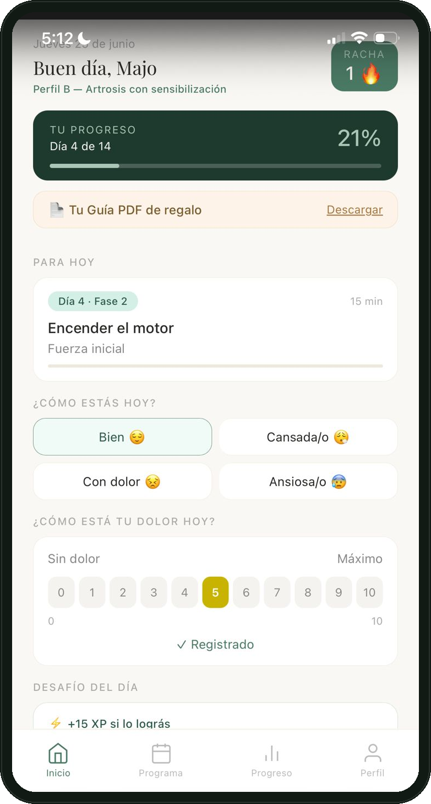
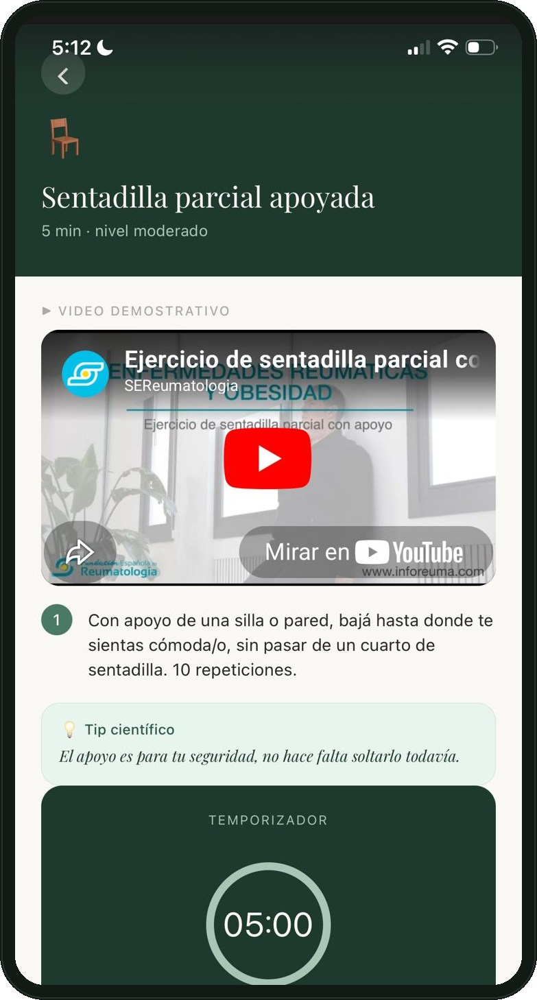
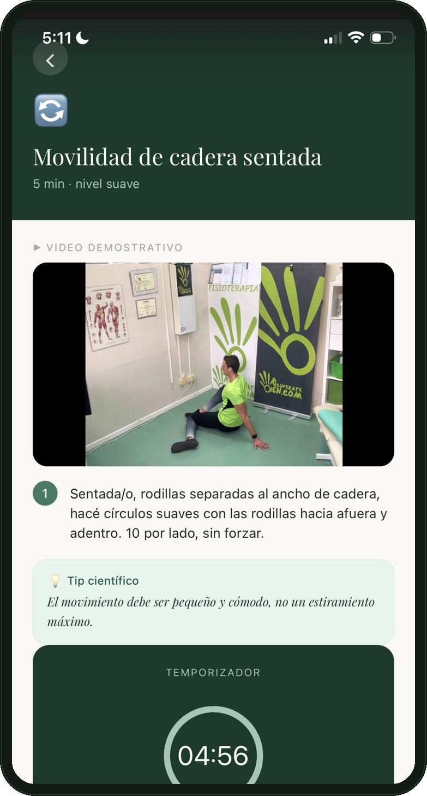
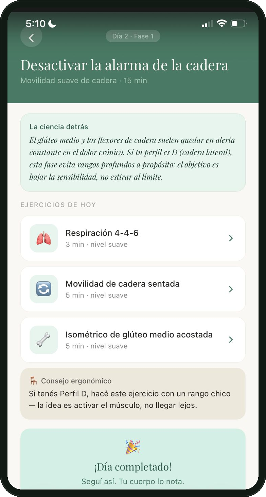
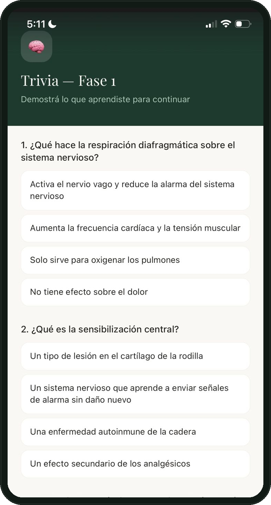
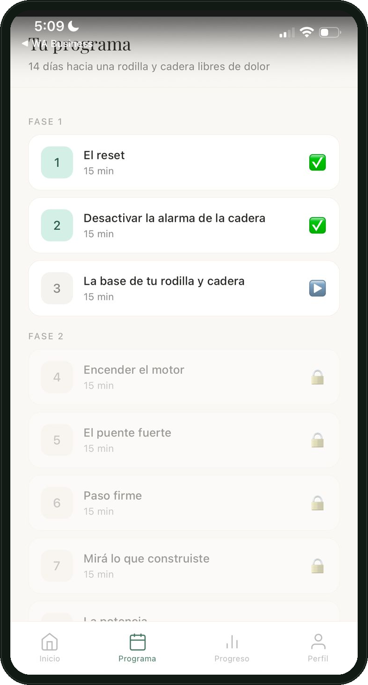

Un programa guiado, día a día, con perfil de dolor personalizado, que te explica por qué duele y qué hacer al respecto. Basado en la neurociencia del dolor.
¿Te suena familiar?
Subir y bajar escaleras, agacharte, levantarte de la silla o salir a caminar se volvió algo que pensás dos veces. Y seguís sin entender bien por qué.
Cada escalón te hace pensar en el dolor antes de subirlo.
O no querés depender de ellos toda la vida.
Nadie te explicó qué pasa en tu cuerpo — y eso genera más miedo, más tensión, más dolor.
Y ese mismo miedo, paradójicamente, suele empeorar el dolor a largo plazo.
Dentro de la app
Capturas reales de la app: tu progreso del día, los ejercicios guiados con video, y la sensación de completar cada jornada.

Tu progreso, día a día

Ejercicios con video guiado

Demostraciones reales

Celebrá cada día completado

Trivias para reforzar lo aprendido

Tu programa completo, fase por fase
Velo en acción
Un recorrido real de la app: el ingreso, tu perfil de dolor personalizado, y los primeros ejercicios guiados con video y temporizador.
¿Qué incluye?
Cada día desbloqueás un nuevo contenido. Avanzás a tu ritmo desde cualquier dispositivo.
Un cuestionario inicial identifica tu perfil entre 4 posibles, para adaptar avisos y ejercicios a tu caso.
Explicaciones claras de por qué duele y cómo funciona el sistema de alarma de tu cuerpo.
Movimientos progresivos, sin equipamiento complicado, pensados para hacer en casa.
Incluida gratis dentro de la app, con ilustraciones, para repasar offline cuando quieras.
Esto no se termina a los 14 días. Es la base que repetís siempre que la necesites — no un programa que se acaba.
Personalización real
Por eso la app identifica tu perfil de dolor al empezar, y adapta avisos y ejercicios puntuales a tu situación.
Dolor relacionado a sobrecarga por actividad o entrenamiento.
Dolor por sedentarismo o trabajo prolongado sentado/de pie.
Dolor con antecedentes de lesión o cirugía previa.
Dolor con señales que requieren mayor atención — la app te lo indica con avisos puntuales.
¿Es para vos?
Respaldo científico
Construido sobre evidencia de neurociencia del dolor, fisiología y psicología clínica.
Comprender la neurofisiología del dolor mejora significativamente los resultados en dolor crónico (Moseley, 2004).
El reposo prolongado empeora el dolor articular crónico. La exposición gradual recalibra el sistema nervioso.
Evitar el movimiento por temor a lastimarse (kinesiofobia) suele perpetuar el dolor de rodilla y cadera.
El cerebro puede aprender y desaprender patrones de dolor. La neuroplasticidad es la base del protocolo.
Lo viví en carne propia
"Hace 20 años me operé la rodilla derecha — ligamentos laterales y menisco, por un accidente de tránsito. En 2024 me golpeé en una vereda en mal estado y ahí volvieron el dolor y la inflamación: si estaba sentada un rato, después me costaba estirar la pierna, y terminé viviendo con renguera. Probé gimnasio, probé fisioterapia, y siempre se me volvía a inflamar. Armé este protocolo aplicando lo que estudio sobre neurociencia del dolor a mi propio caso — y hoy ando genial: se me fue la hinchazón y no tengo más dolor."
Resultados reales
"Llevaba meses evitando salir a caminar por miedo a ese pinchazo en la cadera. Esta guía no solo me dio ejercicios, sino que me enseñó por qué me dolía. Entender la neurociencia detrás del dolor cambió mi forma de moverme. ¡Ya estoy haciendo senderismo de nuevo sin miedo!"
"Al principio pensaba que una app no podía reemplazar la atención personalizada, pero me sorprendió la claridad de los videos y el seguimiento diario. Es como tener a un profesional explicándote los ejercicios en casa, paso a paso y sin complicaciones. Ideal para quienes necesitamos orden en la rehabilitación."
"Mis rodillas se sentían 'oxidadas' después de estar mucho tiempo sentada trabajando. El programa de 14 días fue el empujón que necesitaba para retomar hábitos saludables. Los 'datos del día' me ayudaron a romper mitos que yo misma creía ciertos sobre el desgaste. ¡Muy recomendable!"
"Después de probar mil cosas, lo que más valoro de esta propuesta es el enfoque basado en evidencia. No es un recetario mágico; es una herramienta seria para entender cómo gestionar el dolor de cadera. El registro diario de progreso me mantuvo motivado y enfocado en mis objetivos."
"Lo que más me gustó fue el tono humano y el acompañamiento. Sientes que realmente hay alguien detrás diseñando cada ejercicio. Me ayudó a gestionar mis expectativas y a ganar confianza en que, con movimiento consciente, se puede vivir con mucha mejor calidad de vida."
Invertí en tu bienestar
🔒 Compra 100% segura, procesada por Hotmart
🔒 Compra 100% segura, procesada por Hotmart
Antes de empezar
Esto no se termina a los 14 días: es la base de una rutina que te queda de por vida. Empezá hoy, desde tu casa.